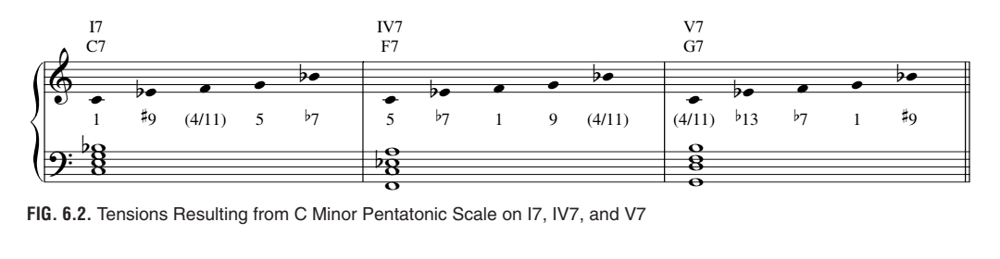

1. 被抹杀的度数们
1. 被抹杀的度数们
在第VII章的“增六和弦家族”中，曾留下了一个耐人寻味的课题。那就是：在未承袭古典思想的爵士理论流派中，和弦符号系统与增六和弦之间的关系。
在现行的常规和弦符号体系中，“增六度”的存在被彻底抹杀了，并不存在用于表达古典增六和弦的正规和弦代号。一律都被粗暴地当作小七度（m7）处理。

虽然很难探寻20世纪当时具体的思想动向，但毋庸置疑的是，增六和弦被视作“不值得特意为其准备专属和弦符号的存在”而被无情舍弃了。像这样“将等音（异名同音）进行改写”的行为，在英语中被称为等音替换（Respell / 重新拼写）。
如果想准确传达“这是增六度哦”的心情，目前只能采取诸如仿照加六和弦写成“+6”、或是仿照引伸和弦在右上角标注“(+13)”等非官方的权宜之计。

明明是完全理所应当存在的和弦性质，但在常规和弦理论中却找不到对应的符号；即便是像《和弦理论大全》或《The Jazz Theory》这样的权威专业大部头，对增六和弦的存在本身也是直接略过。
作为关怀的等音替换
在和弦的世界里，将复杂的拼写进行等音替换以简化的行为随处可见。特别是在像 U-FRET 或 ChordSketch 这样主要面向吉他弹唱受众的和弦乐谱网站上，这种简化尤为显著。

例如像上图那样，在 F 小调的属和弦中，从前后的旋律来看明明是 ♭13th 的音，却被等音替换成了“Caug”。这样一来，仅仅在 C 大调的进行套路中死记硬背过 Caug 按法的人就能直接生搬硬套，十分轻松。这是出于对入门轻度用户的体贴关照而诞生的等音替换，作为一种便利妥协完全可以理解。
但另一方面，对于增六和弦而言，目前世上只有被简化后的和弦名称，这作为理论问题就显得有些严重了。这让热爱和弦理论、渴望精确记录和弦代号的核心硬核用户无处安放自己的追求。
在这一节中，通过认识这些“被抹杀的度数们”，我们来摸清现行和弦命名系统所面临的“漏洞”，从而在心理上抚平对和弦理论中那些微小不协调之处的纠结——这是一篇相当硬核小众的内容。
和弦代号的判定法
判定和弦代号的哲学并不唯一，但在此我们采用公认最为精密的、基于第VI章和弦音阶理论（CST）的判定方法。

像这样结合背景音阶信息一同审视，就能准确判定某个音究竟是奇数度还是偶数度，从而赋予其严密的和弦代号。
♭10th / ♯9th 问题
和弦理论进行这种“抹杀”，绝不仅限于增六和弦。例如在爵士理论著作的中篇探讨布鲁斯（Blues）是必经之路，而在那里，有时会把蓝调音（Blue Note）中的 Mi♭ 强行当作 ♯9th 处理。

Mulholland, Joe. “The Berklee Book of Jazz Harmony”如上图所示，明明在 V7 中能把 Mi♭ 准确地视作“♭13th”，而在 I7 中却堂而皇之地记作“♯9th”，这种公然自相矛盾的标记竟然被泰然自若地刊登在教材中[1]。
五线谱上没有妥协、端端正正地写成了 Mi♭，偏偏在引伸音的理论诠释上非要标成 ♯9th，这种前后脱节让人格外如鲠在喉。我想这大概是出于“大三度与小三度同时存在会破坏系统框架”的焦虑，才不得已采用了这种别扭的写法。
取消变音（变位的还原）
然而归根结底，“大三度与小三度共存”不仅出现在布鲁斯中，在日常的流行音乐中也屡见不鲜。其最具代表性的正是旋律篇中我们熟知的“取消变音（变位还原）”。

虽然此前未曾大张旗鼓地搬上台面讨论，但常规和弦理论压根不承认“取消变音”这种构想，也就是拒绝承认“♭10th 引伸音”的存在。即便从前后逻辑和乐句走势来看明明白白是 Sol♮，在现行系统中也一律硬写成 ♯9th。这与刚才蓝调音的做法如出一辙：面对大三度与小三度并存的既成事实，强行自我安慰道：“因为这是变化属和弦（Altered Dominant），所以是允许存在的 ♯9th 引伸音”。
此外在近代古典音乐中，巴托克等作曲家所运用的将小和弦叠在大和弦之上的“大小三和弦复合（Major-Minor Chord）”也广为人知；在诸如“西班牙八声音阶（Spanish Eight-Tone Scale）”等民间八声音阶中，大三度与小三度的共存同样是客观存在的。
考虑到这些现实，干脆大大方方承认“♭10th 引伸音”这一概念，整个系统岂不是更加清爽自洽？但无论如何，目前的现状并未采纳这一方案。
♭4th / 3rd 问题
此外，“减四度”音程在和弦符号系统中也遭到了无视与抹杀。

要阅读本文的后续内容，需要登录。请从侧边栏的登录表单进行登录。会员注册是免费的。

这是在小调常见的和弦进行中附加装饰的例子。“减四度”其实离我们相当近：只要将属七和弦的 ♭13th 省略根音转化为减七和弦，就必定会浮现出来[2]。

纯粹从逻辑上看，这理应被称为“♭11th”引伸音；但在通用乐理中它根本没有容身之地，几乎从未被正视过。
尤其在本例中由于同时触发了取消变音，单看键盘物理键位甚至容易被误认为 A♭Δ7(-5, 13)。为了防止此类误解，正式引入 ♭11th 概念本是十分合理的。
减三度（o3rd）问题
在旋律篇第IV章“音阶的调配”中我们曾提及，现行的和弦理论中同样没有“减三度”的专属代号。
 建立在阿拉伯音阶上的和弦
建立在阿拉伯音阶上的和弦
“减三度”是指当“Si-Do-Re♭”或“Fa♯-Sol-La♭”这样出现连续三个音级皆为时产生的音程。因为跨度为两个半音，它与“大二度”等音等价。
在“包含连续半音的音阶”上进行三度叠置构建和弦时，就会出现减三度。在阿拉伯音阶中如上谱所示，在第 vii 个和弦上就会生成减三度，面临着找不到对应和弦符号的窘境。如果硬要记录它，使用诸如“-3”这样的记号算是比较折中的方案。
 可能的记法草案
可能的记法草案
小调的“m”是否保留存有争议。但若去掉“m”，很可能“-3”会被误解为“小三度”，从而引来“为什么要特意写成-3？”的质疑；因此出于稳妥起见，写作“m(-3, -5)”会更加清晰踏实。
从根本上说，像“-5”代表减五度、“-9”代表小九度这样，用同一个减号混淆“减（Diminished）”与“小（Minor）”本身就是记谱法体系的一大遗留隐患。
2. 被放弃严谨拼写者们
与增六和弦一样被放弃了严密音程度数测量的代表，正是减七和弦（Diminished 7th）。

在现行惯例中，似乎弥漫着这样一种风气：只要是“以小三度等间距四等分12个音”，一律统统记作 dim7 即可；然而实际上其中混入了大量的加六和弦（Sixth Chord）。
减七和弦的偷梁换柱
最典型的就是“辅助减和弦（Auxiliary Diminished）”，该技法最初源自古典时代的半音阶装饰，在门德尔松等人的作品中均有实际用例[3]。

它的起源被认为是由除低音外的所有声部向相邻音级移动的“三重挂留”所偶然生成的。此时的 La 音，毋庸置疑就是真真切切的 La 音，如果硬要解释成不知从哪儿突然冒出来一个重降 Si（Si♭♭），未免过于荒谬。既然是 La，既然是大六度，那么这个和弦本质上其实是一种加六和弦。
随处可见的“伪减七和弦”
此外，主要在和声小调 / 和声大调体系的音阶环境中，表观上与 dim7 别无二致的加六和弦极易产生。

虽然常说“减七和弦无论怎么转位依然是减七和弦”，但在和声小调的世界里轮换转动，真正满足“1-3-5-7”纯正三度叠置的，唯有从导音建立的 Bo7。 给每一个和弦标注严密的代号就会呈现如上形态，但在现实中几乎没有人会标注得如此繁复精密。在和弦理论的世界里，将加六族系的和弦直接安上 dim7 之名早已司空见惯[4]。
简化所带来的系统摩擦
然而，将减七度与大六度混为一谈，必然给整个理论系统带来相应的摩擦与裂痕。
 Mulholland, Joe. “The Berklee Book of Jazz Harmony”
Mulholland, Joe. “The Berklee Book of Jazz Harmony”
这是前述同一部教材中对辅助减和弦的解说：和弦代号无奈妥协写成了“dim7”，度数标记也顺从地写成“o7”，但唯独在五线谱上为了忠于音乐事实依然写成了 La。
结果在这份乐谱上，呈现出了一种怪诞的外观：音阶成员中根本不存在六度音，而且同时并存着减七度（o7）与大七度（Δ7）。为了让系统看似浅显易懂而简化和弦代号，结果却制造出了内部逻辑的龃龉，进而给读者引出全新的困惑，这不能不说是一种讽刺。
全音阶（Wholetone）问题
同样地，对于阶（Wholetone Scale），关于其等音拼写，世上也弥漫着一种“怎样写都无所谓啦”的氛围。大家普遍认为全音阶的本质就在于“以全音等间距将12个音六等分”，至于具体拼写不过是次要细枝末节。

有人为了谱面排布的统一感拼写为 La♯，也有人为了强调与 aug7 和弦的对应关系拼写为 Si♭。老实说，关于这两者究竟谁更妥当的学术争论，几乎从未有人展开过。
全音阶与具体个性差异
然而，一旦将这种全音阶交织融入调性音乐之中，根据上下文语境，实际上完全能够确定其最贴切合拍的严密拼写。
这段音乐以 A 弗里吉亚音阶起步，随后一点一滴融入 A 旋律小调的精髓，伴随低音来到 B♭ 时逐渐催生出 B♭ 全音阶。
即便暂时呈现为全音阶，它也是流淌着弗里吉亚与旋律小调骨血的全音阶。正由于这一特定的语境，以下拼写才最为贴切精准：

这种判断，正是我们平时区分 Sol♯ 与 La♭ 的自然延伸，是再日常不过的音乐感知。作何种理解其音乐内涵便截然不同，其倾向性与赋予听众的微观心理印象也会产生微妙的差异。
然而，像这种“由语境驱动的全音阶个性分支”，是不会被收录进理论书的。因为可能性实在过于浩瀚繁多，而且在通用层面上似乎缺乏特意拿出来讲的宏大意义。
我们在此绝非迂腐地强调“乐谱拼写绝对严谨至高无上”。而是想说明：如果一味沉浸在脱离具体语境的纯理论书世界里，人们很可能会与现实音乐世界中所蕴含的丰富性与深邃感失之交臂。
这是与刚才完全相同的演奏，但思维更进一步：将 E、F♯、G♯ 音轻微调高，将 B♭、C、D 音轻微调低进行微调律，以强化弗里吉亚的“黏着感”与旋律小调的“上浮感”。 全音阶绝对的“等距离感”被微妙打破，不仅在语境上、更在实际音响物理内容上折射出弗里吉亚与旋律小调的专属色彩；虽然极其细微，但听觉印象切实产生了不同，弗里吉亚部分与旋律小调部分的“声音分离度”得到了优化（分离度高是否更好暂且不论）。
这看似是某种剑走偏锋的技法，但在流行歌曲中优秀的歌手无时无刻不在进行着这种超越琴键物理音准的微观音高表现（哪怕并非基于自觉理论）；在无伴奏人声合唱（A Cappella）中，在理论指导下进行此类微调律也是完全现实可行的。
像这样一步步走向深处，我们便会意识到：减七和弦或全音阶的等音严密性，在普及性理论书中出于无奈而妥协放弃倒也罢，但在真实的艺术创作世界中弃之如敝履，未免太过可惜了。